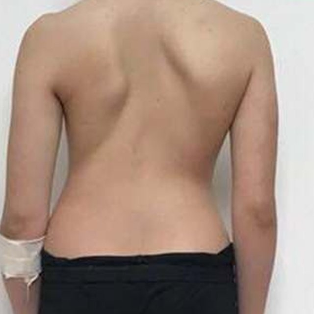
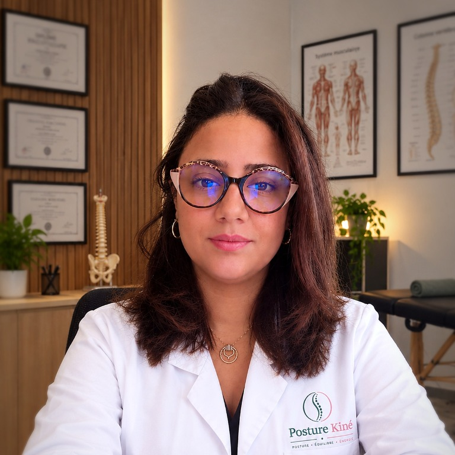
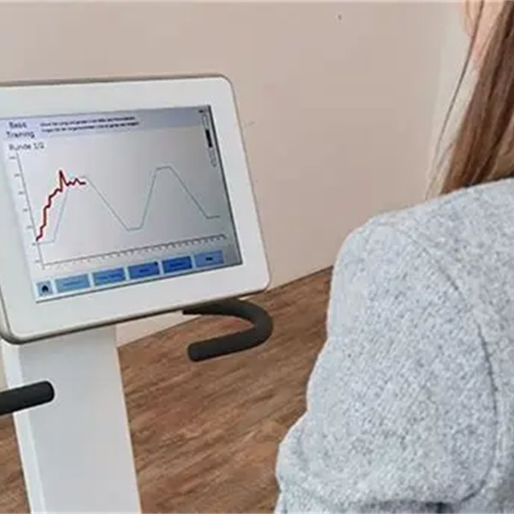
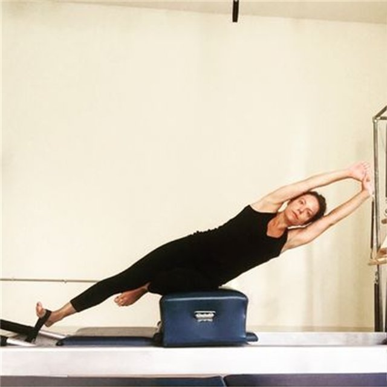
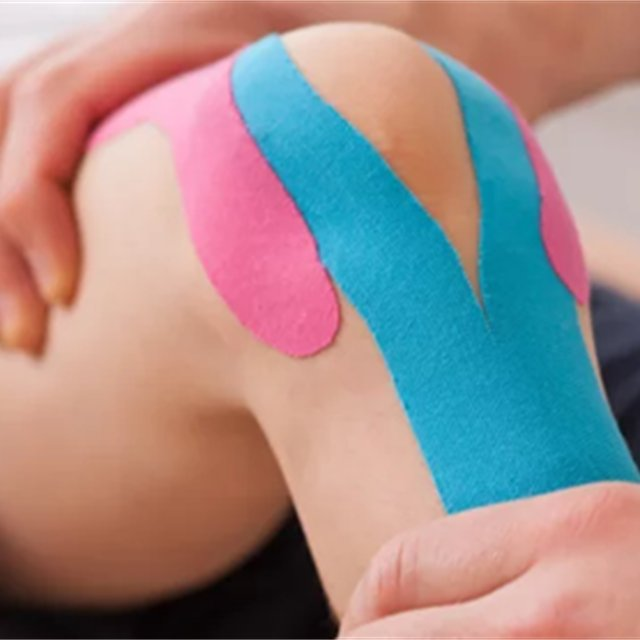
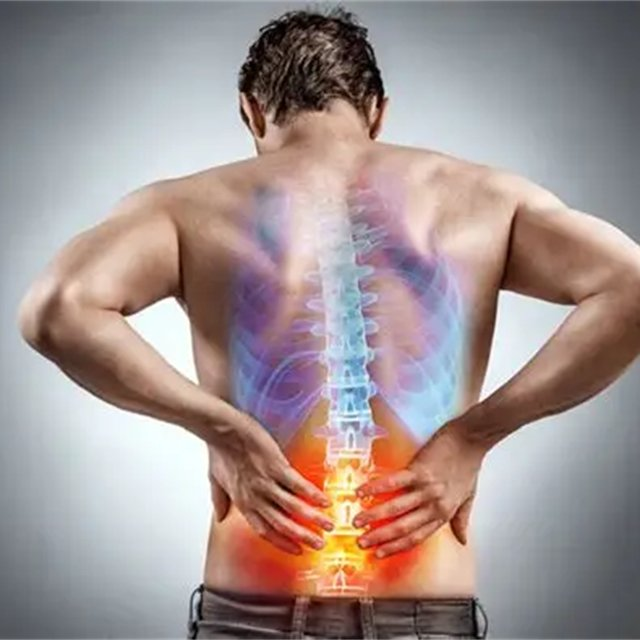
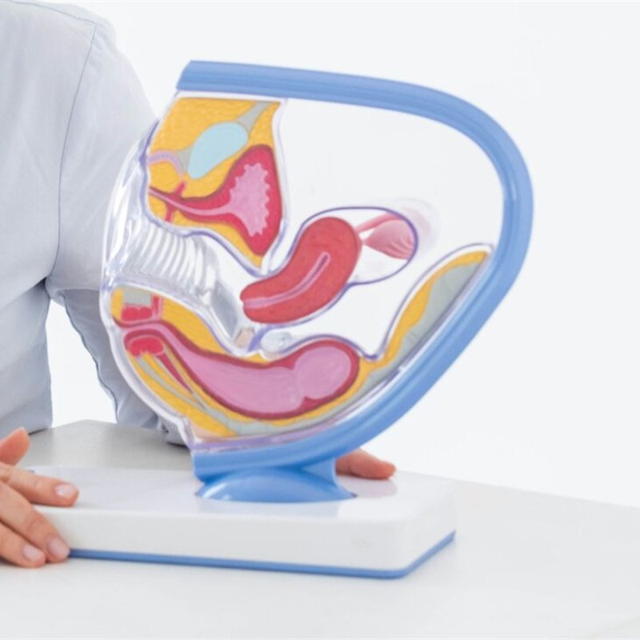

Rééducation de la scoliose
Une prise en charge pointue selon les méthodes Schroth et SEAS, pour les enfants, les adolescents et les adultes.
- Méthode Schroth
- Méthode SEAS
- Enfants · ados · adultes
Posture Kiné · Marrakech (Guéliz)
Kinésithérapie, kinésithérapie posturale et de la scoliose, drainage lymphatique, rééducation périnéale — un accompagnement qui commence toujours par l’écoute.

01Soins et rééducation

Retrouver mobilité et capacités fonctionnelles après une blessure, un traumatisme ou une chirurgie.
Découvrir : Rééducation traumatologique et orthopédique
AVC, Parkinson, troubles de la marche et de l’équilibre.
Découvrir : Rééducation neurologique
Marche, équilibre et harmonie de la posture.
Découvrir : Rééducation fonctionnelle et posturale
Douleurs musculaires, articulaires et vertébrales.
Découvrir : Rééducation musculosquelettique
Accompagner le développement moteur de l’enfant.
Découvrir : Rééducation pédiatriqueVous hésitez ?
Décrivez votre besoin, je vous oriente vers la prise en charge adaptée.
Poser une questionOrientation express
Touchez la zone qui vous gêne : nous vous indiquons la prise en charge adaptée.
Votre orientation
Choisissez une zone sur la silhouette.
Ou sélectionnez une situation ci-dessous.
Cet outil vous oriente ; il ne remplace pas un avis médical. Le bilan au cabinet confirme la prise en charge.
02Votre prise en charge
Un premier échange et un bilan pour comprendre votre histoire, vos douleurs, votre mobilité et vos objectifs.
Un plan de rééducation construit avec vous, adapté à votre quotidien et expliqué clairement.
Des séances progressives et un suivi attentif pour mesurer vos progrès, en confiance.
03Nos spécialités

Une prise en charge pointue selon les méthodes Schroth et SEAS, pour les enfants, les adolescents et les adultes.

Lombalgie, cervicalgie, sciatique, hernie discale ou suites de chirurgie du rachis : thérapie manuelle, Pilates et physiothérapie.

Après l’accouchement, en cas de fuites urinaires ou de prolapsus, et pour une reprise sportive adaptée.

Pour les patients qui ne peuvent pas se déplacer facilement, les séances sont possibles à domicile, sur demande. Toutes les pathologies sont prises en charge.
04Mon parcours
Kinésithérapeute diplômée de l’École de Santé de Tunis depuis 2011, j’ai construit mon parcours autour de la rééducation, du mouvement et de la santé.
Mes stages en France, complétés par un Master en kinésithérapie obtenu à l’IHEPS à Marrakech en 2014, ont enrichi ma formation et ma vision de la prise en charge du patient.
Avec plus de 14 ans d’expérience en kinésithérapie et en management de la santé, j’accorde une place essentielle à l’écoute, à la précision du geste thérapeutique et à une prise en charge adaptée à chaque patient.
05Le cabinet
« Derrière chaque douleur, une histoire singulière, une personne à comprendre et un chemin vers le mieux-être à construire. »
Yasmine BriniKinésithérapeute, fondatrice de Posture Kiné
Faisons connaissanceChaque prise en charge commence par vos besoins.
Un geste thérapeutique précis, après une évaluation pointue.
Un programme personnalisé, progressif et adapté.
Un cadre professionnel, calme et bienveillant.
3DVisite du cabinet
Découvrez le lieu qui vous accueille à Guéliz, avant même votre première séance.
06Le premier pas
Remplissez ce formulaire : votre demande arrive directement au cabinet, et je vous recontacte pour fixer un créneau.